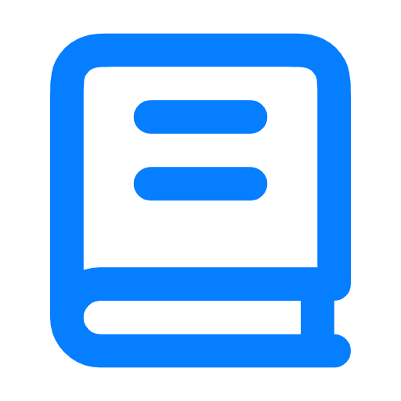
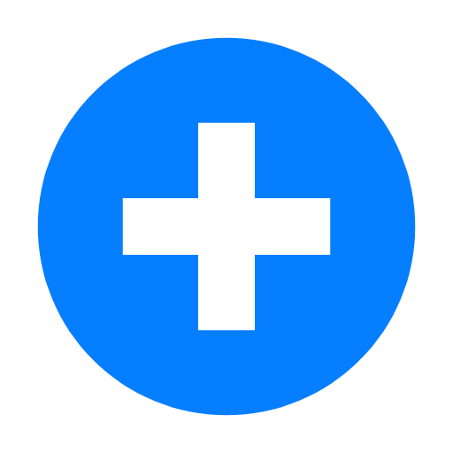
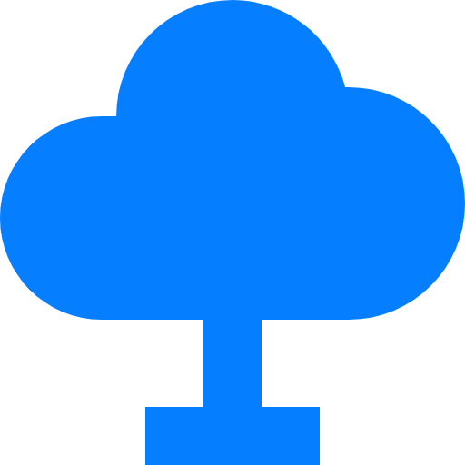
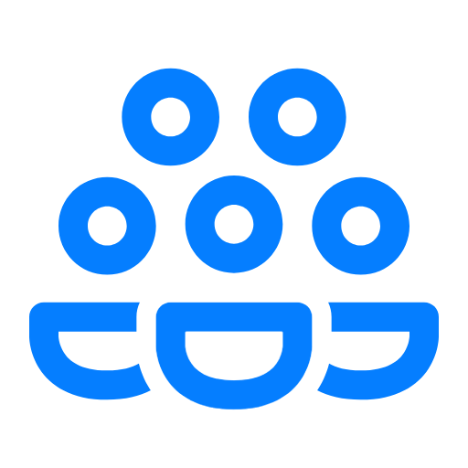
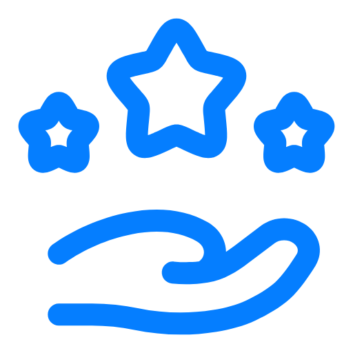

Frentes de Atuação
Sucesso: 4 frentes ativas em 12 comunidades.
Educação
Educação

Reforço escolar, alfabetização de adultos e inclusão digital.
Saúde
Saúde

Campanhas de vacinação, doação de sangue e apoio a hospitais.
Meio Ambiente
Meio Ambiente

Plantio de árvores, limpeza de rios e educação ambiental.
Assistência Social
Assistência Social

Distribuição de alimentos e acolhimento de famílias.
Como Ser Voluntário

Oferecemos oportunidades de voluntariado para todos os perfis.
- Educação
- Saúde
- Meio ambiente
- Assistência social
Para se inscrever, preencha o formulário online.
"Ser voluntário mudou a minha vida."
— Ana, voluntária há 2 anos
Como Doar
Sua doação nos ajuda a manter nossas campanhas.
Campanhas Ativas
- Campanha do Agasalho 2026
- Natal Solidário
- Educação para Todos
Formas de Doação
Pix
doacoes@maosqueajudam.org
Transparência
Publicamos relatórios trimestrais com a prestação de contas.
Nosso Impacto

Em 2025, impactamos mais de 5.000 pessoas em 12 comunidades.
Atenção: As vagas para voluntariado em 2026 estão se esgotando. Inscreva-se logo!
Contato
Ou preencha o formulário de cadastro.